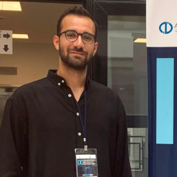

Hello! I am a Research Assistant in Educational Measurement and Evaluation at Trakya University, Faculty of Education, and a PhD candidate in the same field at Hacettepe University.
My work mostly includes Monte Carlo simulations to examine factor retention methods' performance with ordinal datasets in psychoeducational contexts (i.e., cross-loadings, hierarchical structures, and missing data) and what these findings imply for researchers and practitioners who need to determine the appropriate number of factors. I also work with large-scale assessment data (PISA, PIRLS, TIMSS, ICILS) on measurement invariance and item-format effects.
This site collects my publications, talks, and the software and teaching materials I share.

How many factors are there, really? Parallel analysis, EGA, Hull, CD and friends — stress-tested with ordinal, mixed-format and hierarchical data — plus what that structure does to alpha, omega and their relatives.
Finite mixture, latent class and factor mixture models to uncover unobserved respondent subgroups and test whether measurement properties hold across them.
Psychometric network models as a complementary lens on construct structure, alongside the factor-analytic tradition.
Measurement invariance and item-format effects across countries in PISA, PIRLS, TIMSS and ICILS.
How these four lines have shifted in emphasis since my first conference talk in 2023, sized by how many papers, talks and manuscripts touch each theme per year — an approximate picture, not a tracked metric.
Hover or tap a year for the breakdown · relative scale, not a literal count
| Theme | 2023 | 2024 | 2025 | 2026 |
|---|
Thanks for stopping by. Corrections and collaboration ideas are always welcome.